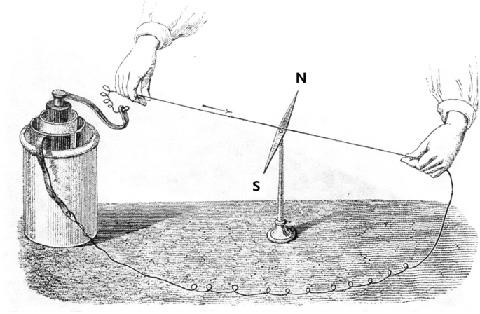
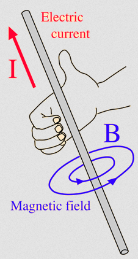
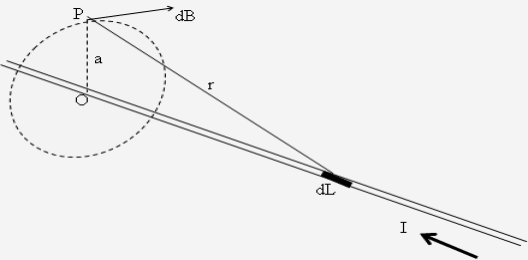
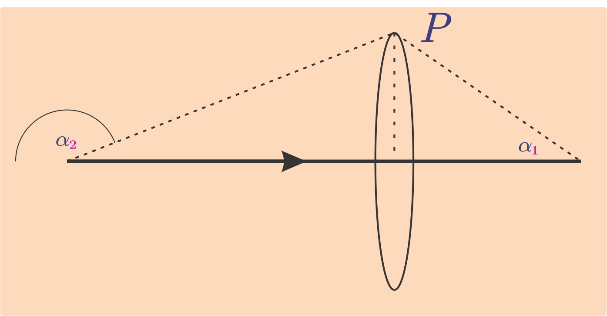
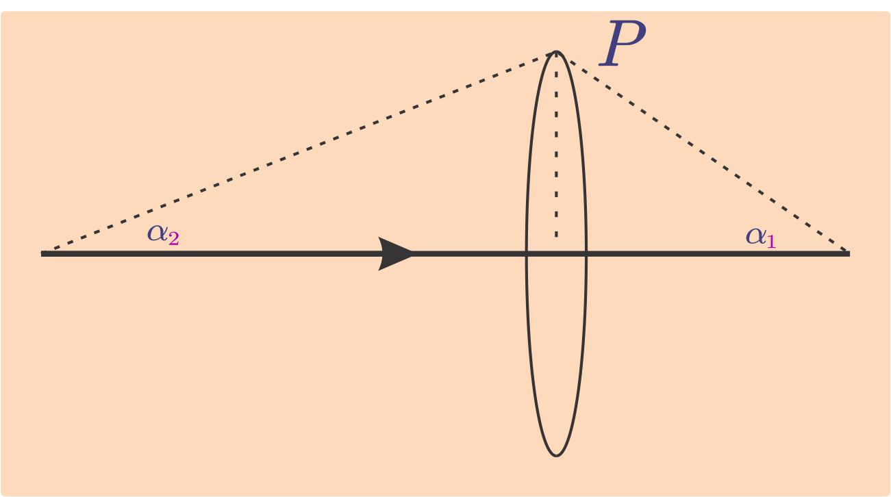
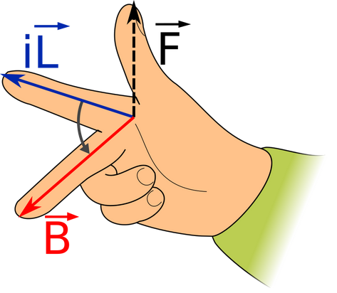
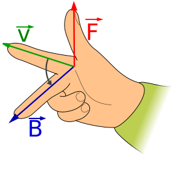

## Kemagnetan dan Induksi Elektromagnetik --- - Medan Magnet di Sekitar Kawat Berarus - Hukum Biot Savart, Hukum Ampere - Flux Magnet - Gaya Lorentz (Gaya Magnetik) - Induksi Elektromagnetik --- ### Medan Magnet di Sekitar Kawat Berarus - Orang pertama yang menemukan gejala kemagnetan adalah Hans Christian Oersted (1770 – 1851). Oersted menemukan suatu gejala bahwa jika sebuah magnet jarum ditempatkan di dekat kawat berarus listrik maka magnet jarum akan menyimpang. Untuk memahami yang ditemukan Oersted mari kita lakukan percobaan sebagai berikut: --- #### Medan Magnet di Sekitar Kawat Berarus <a href="https://javalab.org/en/oersteds_experiment_en/"><p></p></a> --- - Jika tidak ada arus, kompas hanya dipengaruhi oleh medan magnet bumi. - Setelah arus dialirkan, kompas akan menyimpang dari kedudukan semula. - Gejala ini dapat kita analisa sebagai berikut: kompas adalah sebuah magnet dan yang dapat menggerakkan magnet adalah medan magnet. - Medan magnat yang menggerakan magnet jarum tersebut tidak lain adalah medan magnet yang ditimbulkan kawat berarus listrik. - Ketika arah arus dibalik ternyata simpangan jarum kompas juga pada arah sebaliknya. --- - Dari uraian di atas dapat disimpulkan, bahwa **di sekitar kawat berarus listrik ada medan magnet**. - Medan magnet yang ditimbulkan oleh arus listrik dapat juga disebut **medan elektromagnet**. - Medan magnet dapat dilukiskan dengan garis-garis gaya magnet. Pola garis gaya magnet dapat ditunjukkan dengan percobaan sederhana yaitu dengan serbuk besi yang ditaburkan di atas kertas dan penghantar berbagai bentuk yang dialiri arus. --- #### Arah Induksi Magnetik Untuk mempermudah kita gunakan aturan genggaman tangan kanan sebagai berikut: <p></p> --- - Arah medan magnet *B* ditentukan dengan kaidah sekrup putar kanan atau tangan kanan. - Jika tangan kanan menggenggam kawat berarus listrik dengan arah ibu jari sama dengan arah arus maka arah lipatan jari-jari sama dengan arah garis gaya magnet. - Jika arah maju sekrup menyatakan arah arus,maka arah putar kanan sekrup sama dengan arah garis gaya magnet. --- - Arah induksi magnet di suatu titik merupakan garis singgung garis gaya magnet di titik tersebut (garis yang tegak lurus jari-jari). - Sering kali digunakan tanda (•) untuk menandai arah keluar bidang dan (⨂) untuk arah masuk bidang. --- ### Hukum Biot Savart <a href="https://www.geogebra.org/classic/qzvsxbyb" data-preview-link><p></p></a> --- <div id="geogebra01"></div> --- #### Hukum Biot Savart >*Jika terdapat sebuah titik **P** berjarak **a** dari sebuah kawat berarus listrik **I**, kawat berarus itu terdiri atas bagian-bagian kecil kawat berarus yang disebut elemen arus (**dL**). Tiap elemen arus ini akan menimbulkan induksi magnet kecil (**dB**) yang disebabkan oleh elemen arus **dL**,sebanding dengan sinus sudut antara **r** dan **dL**, dan berbanding terbalik dengan kuadrat jarak **P** ke elemen arus **dL**.* --- - Dengan demikian didapatkan perumusan sebagai berikut: ###### $$dB=\frac{k\ I\ dL\ \sin\alpha}{r^2}$$ --- Keterangan: - *dB* = Medan magnet di P yang disebabkan oleh elemen kawat *dL* (tesla atau T) - *k* = faktor pembanding (10<sup>−7</sup> Wb A<sup>−1</sup>m<sup>−1</sup>) - *I* = kuat arus pada kawat (A) - *dL* = elemen panjang kawat (m) - *r* = jarak antara P dengan *dL* (m) - *α* = sudut antara *I* dengan *r* --- #### Hukum Biot Savart - Untuk menghilangkan faktor *k* pada rumus di atas, boleh dipakai konstanta baru *μ<sub>0</sub>* (permeabilitas ruang hampa) $$k=\frac{\mu_0}{4\pi}$$ *μ<sub>0</sub>* = 4π × 10<sup>−7</sup> Wb A<sup>−1</sup>m<sup>−1</sup> sehingga ###### $$dB=\frac{\mu_0\ I\ dL\ \sin\alpha}{4\pi r^2}$$ --- >*Medan magnet di sebuah titik **P** yang disebabkan oleh seluruh elemen arus di sepanjang **I** sama dengan jumlah vektor **dB** oleh elemen-elemen arus di sepanjang **I**. Secara matematis, hasil penjumlahan dB oleh masing-masing dL sepanjang **I**, diperoleh dengan integrasi **dB** sepanjang **I**.* --- $$\begin{split} B &=\int dB\cr &=\frac{\mu_0}{4\pi}\int \frac{I\ dL\ \sin\alpha}{r^2}\end{split}$$ --- #### Medan magnet dB di titik P di sekitar kawat berarus - Vektor *dB* tegak lurus terhadap *dL* (= arah arus) dan terhadap vektor satuan *r* (arah menuju titik P) - Besar *dB* berbanding terbalik dengan kuadrat jarak P ke *dL* (r<sup>2</sup>) - Besar *dB* berbanding lurus dengan kuat arus *I* dan besar *dL* - Besar *dB* berbanding lurus terhadap *sin α*, di mana *α* adalah sudut antara *dL* dan vektor satuan *r* --- - Penyelesaian persamaan di atas didapatkan dengan menganggap *α* sebagai variabel bebas, sehingga variabel lainnya dinyatakan dalam *α*. $$\tan\alpha=\frac a L\implies L=\frac a {\tan\alpha}=a\cotg\alpha$$ $$L'=\frac{dL}{d\alpha}=a\cosec^2\alpha$$ *$$dL=a\cosec^2\alpha\ d\alpha$$* --- $$\sin\alpha=\frac a r\implies r=\frac a {\sin\alpha}=a\cosec\alpha$$ *$$r^2=a^2\cosec^2\alpha$$* --- $$B=\frac{\mu_0}{4\pi}\int \frac{I\ dL\ \sin\alpha}{r^2}$$ $$B=\frac{\mu_0\ I}{4\pi}\int \frac{a\cosec^2\alpha\ \sin\alpha\ d\alpha\ }{a^2\cosec^2\alpha}$$ $$B=\frac{\mu_0\ I}{4\pi\ a}\int^{\alpha_2}_{\alpha_1} \sin\alpha\ d\alpha$$ ###### $$B_P=\frac{\mu_0\ I}{4\pi\ a}-\cos\alpha\displaystyle\bigg\vert^{\alpha_2}\_{\alpha_1}=\frac{\mu_0\ I}{4\pi\ a}(\cos\alpha_1-\cos\alpha_2)$$ --- Keterangan: - *B<sub>P</sub>* = Medan magnet di P di sekitar kawat berarus (tesla atau T) - *μ<sub>0</sub>* = permeabilitas vakum (4π × 10<sup>−7</sup> Wb A<sup>−1</sup>m<sup>−1</sup>) - *I* = kuat arus pada kawat (A) - *a* = jarak antara P dengan kawat (m) - *α<sub>1</sub>* = sudut antara *I* dengan *r<sub>1</sub>* - *α<sub>2</sub>* = sudut antara *I* dengan *r<sub>2</sub>* (ujung yang lain) --- - Persamaan di atas dapat dipakai jika sudut *α<sub>2</sub>* dihitung sebagai berikut: <p></p> --- - Sementara persamaan: ###### $$B_P=\frac{\mu_0\ I}{4\pi\ a}(\cos\alpha_1+\cos\alpha_2)$$ dapat dipakai jika sudut *α<sub>2</sub>* dihitung sebagai: <p></p> --- ##### 1. Medan magnet pada Kawat lurus dengan Panjang Tertentu ###### $$B_P=\frac{\mu_0 I(\cos\alpha_1+\cos\alpha_2)}{4\pi a}$$ - *a* = jarak antara P dengan kawat (m) --- ##### 2. Medan magnet pada Kawat lurus dengan Panjang Tak Hingga - Untuk kawat panjang tak hingga, *α<sub>1</sub>* dan *α<sub>2</sub>* = 0°, sehingga ###### $$B_P=\frac{\mu_0 I}{2\pi a}$$ --- #### Hukum Ampere >*"Jumlah medan magnet di sekitar kawat berarus dalam lintasan tertutup sebanding dengan arus yang menyebabkannya"* ###### $$\oint \mathbf{B}\cdot \mathrm{d}\mathbf{L}=\mu_0 I$$ --- - Jika lintasan tertutup itu adalah lingkaran yang berjari-jari *a*, maka panjang lintasan tersebut adalah keliling lingkaran. $$ \mathbf{B}\cdot (2\pi a)\=\mu_0 I$$ ###### $$ \mathbf{B}=\frac{\mu_0 I}{2\pi a}$$ yang sama dengan Hukum Biot-Savart --- #### Flux Magnet $$\mathbf{\Phi_B}=\int \mathbf{B}\cdot \mathrm{d}\mathbf{A}$$ ###### $$\mathbf{\Phi_B}=\mathbf{B} \mathbf{A} \cos\theta$$ - *Φ<sub>B</sub>* = Fluks Magnet (weber atau Wb, atau Tesla⋅m<sup>2</sup>) - *B* = Medan magnet (tesla atau T) - *A* = Luas permukaan (m<sup>2</sup>) - *θ* = sudut antara kuat medan dan normal permukaan --- #### Hukum Gauss tentang magnetisme *Fluks magnet dalam permukaan tertutup selalu sama dengan 0* ###### $$\oint \mathbf{B}\cdot \mathrm{d}\mathbf{A}=0$$ --- #### Pengertian - Tidak Ada Monopol Magnetik: Hukum ini berarti kutub magnet tunggal **tidak pernah ditemukan di alam**. - Berbentuk Dipol: Setiap magnet **selalu mempunyai dua kutub**, yaitu kutub utara dan kutub selatan. Jika sebuah magnet dipotong, kutub baru akan langsung terbentuk sehingga tetap menjadi dipol. - Garis Medan Tertutup: Garis-garis gaya medan magnet selalu membentuk jalur atau **loop tertutup** yang keluar dari kutub utara dan masuk ke kutub selatan tanpa awal atau akhir. --- #### Gaya Lorentz (Gaya Magnetik) - Sebuah kawat berarus atau sebuah muatan yang bergerak dengan kecepatan tetap yang berada dalam medan magnet akan mendapat gaya yang besarnya sebanding dengan **besar arus**, **panjang kawat** dan **besar medan magnet** tersebut. - Gaya ini yang dinamakan dengan gaya Lorentz, dan secara matematis dapat dinyatakan: --- #### Kawat Berarus ###### $${\displaystyle \mathbf {\vec{F_L}} =\vec{I}\times \mathbf {\vec{B}}\boldsymbol {\ \ell}}$$ ###### $$F_L=IBL\sin\alpha$$ - *F<sub>L</sub>* = Gaya Lorentz (N) - *I* = Kuat arus (A) - *B* = Medan Magnet (T) - *L* = panjang kawat (m) - *α* = sudut antara *I* dan *B* --- #### Muatan yang bergerak dalam medan magnet ###### $${\displaystyle \mathbf {\vec{F_L}} =q\ \mathbf {\vec{v}} \times \mathbf {\vec{B}}}$$ ###### $$F_L=qvB\sin\alpha$$ Keterangan - *F<sub>L</sub>* = Gaya Lorentz (N) - *q* = muatan (C) - *v* = kecepatan (m/s) - *B* = Medan Magnet (T) - *α* = sudut antara *v* dan *B* --- #### Arah Gaya Lorentz - Arah Gaya Lorentz dapat ditentukan menggunakan aturan telapak tangan kanan, yaitu ibu jari menyatakan arah Gaya Lorentz (*F<sub>L</sub>*), jari telunjuk menyatakan arah arus (*I*) atau arah kecepatan (*v*), jari tengah menyatakan arah medan magnet (*B*) <p></p><p></p> --- #### Gaya Lorentz antara Dua Kawat Lurus dan Panjang - Telah kita ketahui bahwa disekitar kawat berarus ada medan magnet dan kawat berarus dalam medan magnet mengalami gaya Lorentz. - Bagaimana jika dua kawat berarus listrik saling berdekatan? - Keadaan ini dapat kita analisa sebagai berikut; --- - Misal jarak kawat 1 dan 2 adalah *a* dan besar arusnya *I<sub>1</sub>* dan *I<sub>2</sub>*. Kawat 1 akan menimbulkan medan magnet *B<sub>1</sub>* dan kawat 2 menimbulkan *B<sub>1</sub>*. - Gaya Lorentz yang dialami kedua kawat adalah: $${\displaystyle \mathbf {\vec{F_{L1}}} =\vec{I_1}\times \mathbf {\vec{B_2}}\boldsymbol {\ \ell}}$$ $${\displaystyle \mathbf {\vec{F_{L1}}} =\vec{I_1}\times \frac{\mu_0 \vec{I_2}}{2\pi a} \boldsymbol {\ \ell}}$$ ###### $${\displaystyle \mathbf {\vec{F_{L1}}} =\frac{\mu_0 \vec{I_1}\vec{I_2}}{2\pi a} \boldsymbol {\ \ell}}$$ --- $${\displaystyle \mathbf {\vec{F_{L2}}} =\vec{I_2}\times \mathbf {\vec{B_1}}\boldsymbol {\ \ell}}$$ $${\displaystyle \mathbf {\vec{F_{L2}}} =\vec{I_2}\times \frac{\mu_0 \vec{I_1}}{2\pi a} \boldsymbol {\ \ell}}$$ ###### $${\displaystyle \mathbf {\vec{F_{L2}}} =\frac{\mu_0 \vec{I_2}\vec{I_1}}{2\pi a} \boldsymbol {\ \ell}}$$ ###### $${\displaystyle \mathbf {\vec{F_{L1}}} =\mathbf {\vec{F_{L2}}}=\frac{\mu_0 \vec{I_1}\vec{I_2}}{2\pi a} \boldsymbol {\ \ell}}$$ --- atau gaya Lorentz per satuan panjang dapat dinyatakan: ###### $${\displaystyle \mathbf {\frac{\vec{F_{L}}}{\boldsymbol{\ \ell}}} =\frac{\mu_0 \vec{I_1}\vec{I_2}}{2\pi a}}$$ --- #### Gaya Lorentz pada Muatan yang Berada dalam Medan Magnet - Sebuah partikel bermassa *m* bermuatan listrik *q* yang bergerak dengan kecepatan *v* di dalam medan magnet dengan induksi magnetik *B* akan mengalami Gaya Lorentz *F<sub>L</sub>* sebesar ###### $${\displaystyle \mathbf {\vec{F_L}} =q\ \mathbf {\vec{v}} \times \mathbf {\vec{B}}}$$ ###### $$F_L=qvB\sin\alpha$$ --- - *α* = sudut antara *v* dan *B*. Bila *α* = 0° atau 180°, maka lintasan muatan berupa garis lurus. - Bila *α* = sudut lancip maka lintasan muatan berupa helix atau spiral. - Bila *α* = 90º (v ⊥ B)maka *$F=qvB$*. Karena *F* selalu tegak lurus terhadap *v* maka lintasan partikel bermuatan berupa lingkaran yang jari-jari *r*-nya dapat dihitung: --- $$F_L=F_S$$ $$qvB=\frac{mv^2}{r}$$ ###### $$r=\frac{mv}{qB}$$ --- - Frekuensi putarannya dapat dihitung: $$f=\frac{\omega}{2\pi}=\frac{\frac v r}{2\pi}$$ $$f=\frac{v}{2\pi\ r}$$ $$f=\frac{v}{2\pi\ \frac{mv}{qB}}$$ ###### $$f=\frac{qB}{2\pi\ m}$$ --- ## Induksi Elektromagnetik --- #### GGL Induksi - GGL Induksi adalah sumber tegangan yang dihasilkan dari perubahan fluks magnetik dalam suatu kumparan. - Besar GGL induksi dinyatakan dengan hukum Faraday. --- #### Hukum Faraday > GGL induksi pada sebuah rangkaian berbanding lurus terhadap laju perubahan fluks magnet yang melaluinya ###### $$\displaystyle {\mathcal {E}}=-{\frac {\mathrm {d} \Phi _{B}}{\mathrm {d} t}}$$ --- untuk sejumlah N lilitan ###### $$\displaystyle {\mathcal {E}}=-N{\frac {\mathrm {d} \Phi _{B}}{\mathrm {d} t}}$$ - *ε* = GGL induksi (V) - *N* = Jumlah lilitan. - *Φ<sub>B</sub>* = Fluks Magnet (weber atau Wb, atau Tesla⋅m<sup>2</sup>). - *t* = selang waktu. --- #### Hukum Lenz - Arah (polaritas) GGL induksi sedemikian sehingga cenderung menghasilkan arus yang menimbulkan fluks magnet *berlawanan* dengan perubahan fluks magnet dalam rangkaian --- - Jika GGL disebabkan oleh gerakan suatu penghantar dalam medan magnet, arah arus induksinya adalah sedemikian rupa sehingga arah medan magnet pada penghantar berlawanan dengan arah geraknya. Jadi gerakan penghantar dilawan. - Jika GGL disebabkan oleh perubahan fluks yang melalui suatu rangkaian tertutup, arus menimbulkan medan magnet yang *berlawanan* dengan medan asal, jika fluksnya bertambah; dan *searah* dengan medan asal, jika fluksnya berkurang. --- #### Motor Listrik <iframe width="560" height="315" src="https://www.youtube.com/embed/CWulQ1ZSE3c?si=YCgBQOfPGmIP39Qc" title="YouTube video player" frameborder="0" allow="accelerometer; autoplay; clipboard-write; encrypted-media; gyroscope; picture-in-picture; web-share" referrerpolicy="strict-origin-when-cross-origin" allowfullscreen></iframe> --- #### Transformator - Transformator (trafo) adalah alat atau komponen listrik yang berfungsi untuk mengubah (menurunkan atau menaikkan) tegangan. - Transformator *step-up* : berfungsi menaikkan tegangan. - Transformator *step-down* : berfungsi menurunkan tegangan. --- $$\displaystyle {\mathcal {E}_P}=-N_P{\frac {\mathrm {d} \Phi _{B}}{\mathrm {d} t}}$$ $$\displaystyle {\mathcal {E}_S}=-N_S{\frac {\mathrm {d} \Phi _{B}}{\mathrm {d} t}}$$ ###### $$\displaystyle {\frac{{\mathcal {E}_P}}{{\mathcal {E}_S}}=\frac{N_P}{N_S}}$$ - *ε* = GGL induksi (V) - *N* = Jumlah lilitan. --- Jika tidak ada energi yang hilang (transformator ideal) $$\mathcal {E}_S I_S t=\mathcal {E}_P I_P t$$ $$I_S=\frac{\mathcal {E}_P}{\mathcal {E}_S}I_P=\frac{N_P}{N_S}I_P$$ ###### $$I_P:I_S=N_S:N_P$$ - *I* = Kuat arus (A) - *N* = Jumlah lilitan. --- #### Efisiensi Transformator (Transformator tidak Ideal) - Efisiensi transformator didefinisikan sebagai daya keluaran dibagi dengan daya masukan $$\eta=\frac{P_S}{P_P}$$ sehingga perbandingan arus untuk trafo tidak ideal ###### $$\frac{I_P}{I_S}=\frac{N_S}{N_P}\frac{1}{\eta}$$ --- #### Generator dan Motor - Generator mengubah energi kinetik (mekanik) menjadi energi listrik, motor sebaliknya. - Jika sebuah generator dengan *N* lilitan dan luasan *A* berputar dalam medan magnet *B* dengan kecepatan sudut *ω*, fluks magnetik akan mengikuti persamaan ###### $$\Phi _{B}=BA\cos{\omega t}$$ --- $$\displaystyle {\mathcal {E}}=-N{\frac {\mathrm {d} \Phi _{B}}{\mathrm {d} t}}$$ ###### $$\displaystyle {\mathcal {E}}=-NBA{\frac {\mathrm {d}}{\mathrm {d} t}}\cos{\omega t}=NBA\omega\sin{\omega t}$$ $$\displaystyle {\mathcal {E}_{maks}}=NBA\omega$$ <div class="r-hstack justify-center"> <div data-id="name1" style="width: 500px; height: 70px; margin: 10px; border-radius: 5px;"><p><ul><li><em>ε</em> = GGL induksi (V)</li><li><em>B</em> = Medan Magnet (T)</li><li><em>ω</em> = kecepatan sudut (rad/s)</li></ul></div> <div data-id="name1" style="width: 500px; height: 70px; margin: 10px; border-radius: 5px;"><p><ul><li><em>N</em> = Jumlah lilitan</li><li><em>A</em> = Luasan kumparan (m<sup>2</sup>)</li><li><em>t</em> = selang waktu (s)</li></ul></div> </div> --- <img src="../resources/images/ie00.jpg" > --- <img src="../resources/images/ie02.jpg" > --- <img src="../resources/images/ie01.jpg" > --- #### Induktansi diri - Perubahan kuat arus dalam suatu penghantar menyebabkan perubahan fluks magnet pada penghantar itu. Perubahan fluks magnet menyebabkan induksi elektromagnet (arus induksi). Ini disebut *induktansi diri*. ###### $$\displaystyle {\mathcal {E}}=-L{\frac {\mathrm {d}I}{\mathrm {d} t}}$$ - *L* = koefisien induktansi diri (Henry=V.s/A)